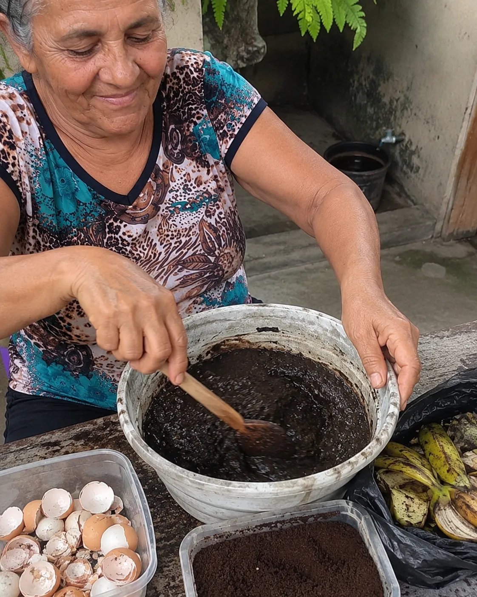
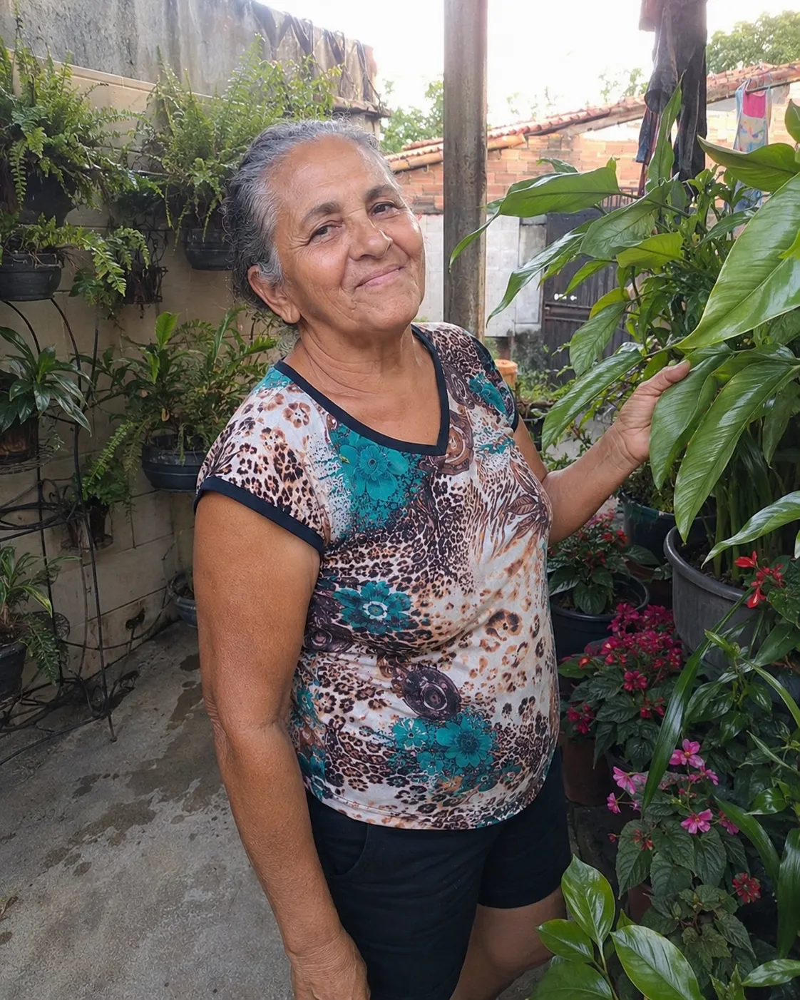

Carta da Dona Benedita · relato pessoal
A receita que minha avó usava pra ressuscitar qualquer planta — e que quase se perdeu na minha família
Eu aprendi a cuidar da terra no quintal, não no laboratório. Senta aqui que eu te conto essa história — ela pode mudar o jeito que você olha pras suas plantas.
Deixa eu me apresentar direito. Me chamam de Dona Benedita. Já passei dos sessenta, criei três filhos, e o que mais me dá paz é molhar as plantas de manhã cedo, de chinelo, com o café esfriando na mão.
Mas nem sempre foi assim. Teve uma época em que eu achei que tinha perdido o jeito de vez. Eu tinha uma hortênsia que ganhei da minha mãe, daquelas de flor azul — e do nada ela começou a definhar. Folha amarelando, ponta secando, virando graveto na minha frente.

Eu fiz de tudo. Reguei mais, achando que era sede. Depois reguei menos. Mudei de lugar três vezes. Comprei aquele adubo caro da loja, o tal granulado azul, e fiquei esperando um milagre que não vinha.
“Será que eu perdi a mão? Será que planta não é mais pra mim?” — era o que martelava na minha cabeça.
Se você já olhou pra uma planta que gosta indo embora sem entender o porquê, sabe exatamente como eu me senti. É uma sensação de fracasso boba, mas que dói.
Foi aí que me lembrei de uma coisa que minha mãe falava
Numa dessas tardes de desânimo, me veio na cabeça uma frase que a minha mãe vivia repetindo lá no sítio:
“Planta não morre de falta de carinho, minha filha. Morre de fome. E a comida dela tá na terra — se a terra morre, não tem rega no mundo que salve.”
E aí caiu a ficha: o problema nunca tinha sido eu. Era a terra.

Porque a planta não come água: ela bebe pra dissolver o alimento que está na terra. Quando o solo vira um pó morto — vaso parado, terra velha, químico que queima tudo — a raiz fica sufocada e com fome. E a planta vai apagando, por mais que você cuide.
A boa notícia? Terra morta pode voltar a viver. E não é com produto caro de loja — é com uma coisa que a minha avó já fazia muito antes de existir adubo em saquinho.
A receita que vinha da minha avó
Minha avó cuidava de um quintal que era uma beleza, num tempo em que ninguém comprava adubo. O que ela usava era uma mistura caseira, feita com coisa simples da cozinha — daquelas que a gente joga fora sem pensar duas vezes.
São 5 ingredientes. Todos baratos, todos fáceis de achar. Provavelmente estão na sua cozinha agora, esperando virar lixo. Misturados na proporção certa, eles devolvem pro solo a vida que ele tinha perdido: os bichinhos do bem, os nutrientes, a estrutura fofa que segura água sem encharcar.

Eu não vou te entregar a receita inteira aqui — as proporções exatas e o modo de fazer estão no guia, porque é ali que está o segredo de funcionar. Mas vou te adiantar uma coisa: é simples, é barato, e dá pra fazer em poucos minutos na sua cozinha.

Se você sabe bater uma vitamina no liquidificador, você dá conta dessa receita. Juro.
O que aconteceu com a minha hortênsia
Preparei a mistura meio descrente, confesso, e coloquei na terra da hortênsia que eu já tinha quase desistido. E fui observando, dia após dia.
Na primeira semana, quase nada — mas a terra já tava com outra cara, mais escura e soltinha. Lá pelos quatorze dias eu vi: uma folhinha nova, verdinha, no meio dos galhos secos. Quase chorei na varanda.

Cada planta tem o seu tempo — comigo foi por volta de duas semanas, mas não é promessa cravada pra toda e qualquer planta. O que eu garanto é que, quando a terra volta a viver, a planta sente.
Aquela mistura virou rotina aqui em casa: passei pro jardim inteiro, pras hortaliças, pros vasos da varanda. Hoje meu quintal é aquilo que você viu lá em cima — cheio, verde, vivo.
Por que eu decidi colocar tudo num guia
Com o tempo, foi todo mundo querendo saber meu “segredo” — vizinha, filha de vizinha, gente da feira. Só que no boca a boca sempre se perdia uma medida, um detalhe. A receita da minha avó corria o risco de se perder de vez.
Então sentei e organizei tudo direitinho: a receita, as proporções, o passo a passo e os errinhos que eu mesma cometi pra você não repetir. Escrito do jeito que eu explicaria pra minha filha — sem nome difícil, sem enrolação.

A ideia é simples: que qualquer pessoa consiga fazer em casa — mesmo quem jura que tem “mão preta”, mesmo quem já matou até cacto sem querer. Porque, de verdade, não existe mão preta. Existe terra morta e gente que nunca aprendeu a reviver.
Quero conhecer o guia De R$47 por R$ 9,90 · acesso imediato · 100% digitalNão sou só eu falando
Quem já usou também conta a sua história
Eu sou só uma senhora contando o meu caso. Mas, desde que organizei o guia, foi chegando mensagem de gente que aplicou a receita em casa. Aqui vão algumas, com autorização delas.


Depoimentos reais de clientes que autorizaram o uso da mensagem e da imagem. Cada planta e cada rotina é diferente — os resultados podem variar.
É tudo digital, viu?
O que você leva pra casa hoje
Acesso na hora, direto no celular ou no computador. Não vai chegar nada pelo correio — é um guia digital que você abre assim que o pagamento confirma, e prepara o adubo você mesmo, com coisa de cozinha.

-
O guia principal
A Fórmula Ancestral do Solo (PDF, 47 páginas) — com a receita completa e as proporções exatas dos 5 ingredientes, escrito simples, do meu jeito.
-
Bônus 1
Calendário de rega — quanto e quando molhar, sem afogar nem deixar secar.
-
Bônus 2
7 plantas que qualquer um ressuscita — até quem acha que tem “mão preta”.
-
Bônus 3
Controle natural de pragas — adeus pulgão e cochonilha, sem veneno em casa.
-
Bônus 4
Onde achar os ingredientes — pra comprar tudo barato e sem complicação.
-
Vídeo aula
Vídeo aula passo a passo — eu te mostrando na prática como misturar e como regar do jeito certo.
Pra você começar hoje
A Fórmula Ancestral + os 4 bônus + a vídeo aula

Aquelas dúvidas de sempre
Antes de você decidir
Funciona em qualquer planta?
A receita age na terra, que é a base de quase toda planta de vaso ou de horta — das suculentas e samambaias às hortaliças (alface, cebolinha, salsinha) e flores como rosa e orquídea. Cada uma tem o seu tempo e as suas manhas, mas todas gostam de uma terra viva embaixo delas.
Preciso entender de jardinagem?
Não precisa nada. Eu fiz o guia pensando justamente em quem acha que não tem jeito com planta. É passo a passo, em linguagem de gente, e a vídeo aula te mostra cada etapa.
É difícil ou dá muito trabalho?
Que nada. São 5 ingredientes de cozinha e poucos minutos de preparo. Se você faz um suco no liquidificador, faz a receita tranquilo.
Em quanto tempo eu vejo resultado?
Depende muito da planta e do estado em que ela está. Comigo e com boa parte dos clientes, a virada costuma começar por volta de 14 dias. Não é uma promessa cravada pra toda planta — é o que a maioria observa quando a terra volta a ficar viva.
Recebo alguma coisa em casa?
Não. É 100% digital. Não chega pó nenhum, frasco nenhum pelo correio. Você recebe o guia em PDF e a vídeo aula, e prepara o adubo você mesma em casa, com ingredientes baratos.
Como eu acesso depois de pagar?
Assim que o pagamento confirma, o acesso libera na hora. Chega por e-mail e você abre o guia, os bônus e a vídeo aula pelo celular ou computador, quando quiser.
Olha, eu vou te falar do fundo do coração: não deixa a sua plantinha morrer achando que a culpa é sua. Quase nunca é. Na maioria das vezes é só a terra pedindo socorro — e isso tem conserto.
Por menos do que custa um lanche, você leva a mesma receita que veio da minha avó, com tudo explicado direitinho, e a garantia de 7 dias pra testar sem medo. Se eu pude reviver a minha hortênsia quando já tinha desistido dela, você também pode com as suas.
Com carinho,
— Dona Benedita
Quero cuidar das minhas plantas Acesso na hora · de R$47 por R$ 9,90Garantia de 7 dias · pagamento seguro · nada físico é enviado